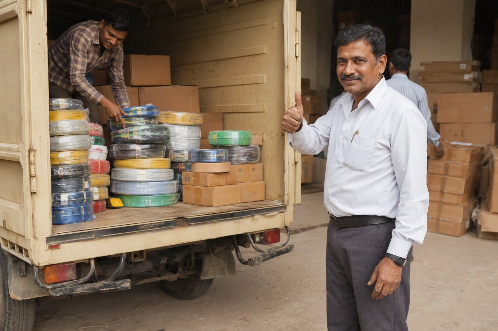

Mount Cable India supplies bulk Finolex wire to builders, contractors and electrical contractors across Karnataka from its Bengaluru godown. Project quantities are quoted itemised within 60 minutes, dispatched in phases as each stage needs them, and every coil — or the entire consignment — may be scanned and verified before you buy.

Why bulk buyers get targeted
Counterfeit wire is not distributed evenly. It concentrates where three conditions hold at once: large quantities, nobody personally attached to the outcome, and material that disappears into a wall within days of arriving. A construction project is all three.
A homeowner buying twenty coils will open a box. A site store receiving four hundred cartons across six months will not, unless it is written into someone's job. That gap is the whole opportunity, and it is why the single most valuable thing a builder can do is make verification a named responsibility rather than a good intention.
What bulk supply from us looks like
- Itemised quotation within 60 minutes of receiving your bill of quantities — line by line, with freight shown separately for sites outside Bengaluru so the landed cost is visible rather than buried in the rate.
- Stock actually held. Every Finolex range is physically in our godown, so a schedule is a schedule rather than an indent against a factory queue.
- Phased dispatch against your programme, so material arrives when the floor needs it instead of sitting on site for months collecting damage and shrinkage.
- Verification at scale. We will scan the outer codes on a consignment before dispatch and send you the record on WhatsApp; your site team scans outer and inner codes on arrival.
- Best pricing in Bangalore — within the 3 to 5 per cent margin that genuine branded wire actually runs on. We will not pretend to a number that does not exist.
Verifying a large consignment without stopping the site
The objection to scanning every carton is time. In practice a scan takes about twenty seconds, so a hundred-carton delivery is roughly thirty-five minutes of one person's day — against a rewiring bill if it goes wrong. Build it into the receiving routine:
- At the gate: count cartons against the challan and check seals before anything is unloaded into the store.
- Outer code on every carton. One person, one phone, scanning as cartons come off the vehicle. Confirm the size, grade and batch reported match the label.
- Inner code on every carton that gets opened for issue. Wire is issued from the store anyway; scan the inner code at the moment of issue and the check costs no extra handling.
- Log it. Carton, batch, result, date, initials. If a dispute ever arises, this log is the difference between a claim and an argument.
| Code | Where it is | What it proves |
|---|---|---|
| Outer QR | Printed on the carton label with the size, grade, coil length and batch | That the carton itself was produced by Finolex and is registered with them |
| Inner QR | Inside the box, reachable only after the carton is opened | That the contents are what Finolex packed — the check a repacker cannot pass |
Both codes matter, and the reason is specific: a genuine carton can be emptied and refilled with duplicate wire. In that case the outer code still verifies perfectly and only the inner code fails. Scanning the outer code alone is an incomplete check, and the people who refill cartons are counting on you stopping there.
A note on with-material contracts
If you are a homeowner or a developer letting electrical work on a with-material basis, understand the incentive you have created: every rupee the contractor saves on material is his profit, and you will never see the boxes. That is not an accusation, it is arithmetic.
The fix is not distrust, it is specification. Require sealed cartons opened at site, QR verification on both codes in your presence or your engineer's, brand-named GST invoices, and your right to cross-check rates against a reference distributor. An honest contractor agrees to all four immediately, because none of them cost him anything. Full detail in our original vs duplicate buyer's guide.
Send the bill of quantities
Sizes, grades, quantities and the phase each is needed in — or simply a photograph of the estimate. WhatsApp it to 88676 76700 and the itemised quotation comes back within 60 minutes.
There is no obligation whatsoever. If you want our number purely to check what someone else has quoted you, ask for it on that basis and we will still send it inside the hour. A market where buyers know the real price is a market we do better in. Read the Google reviews about our Finolex wires if you want to know how that works out for the people who try it.